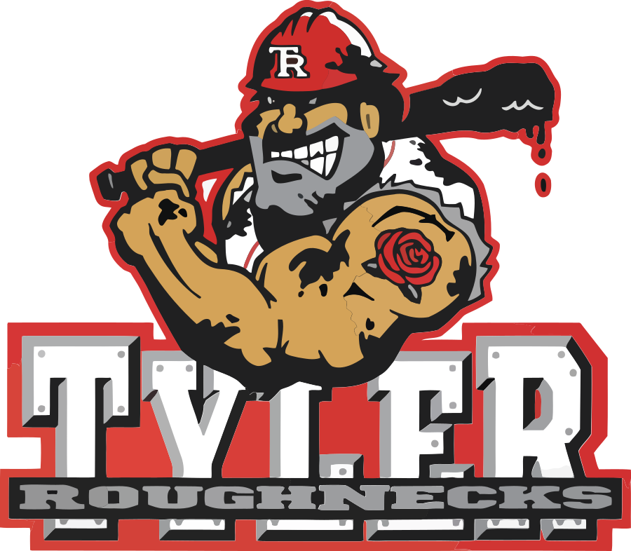
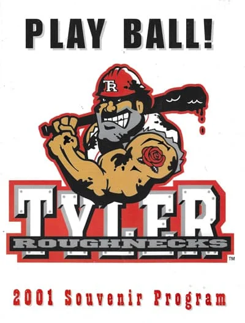
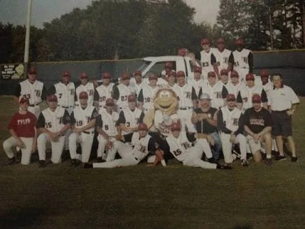
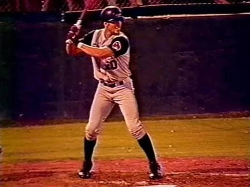
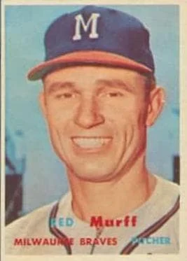
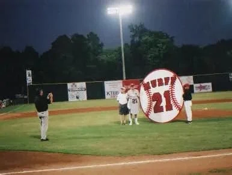
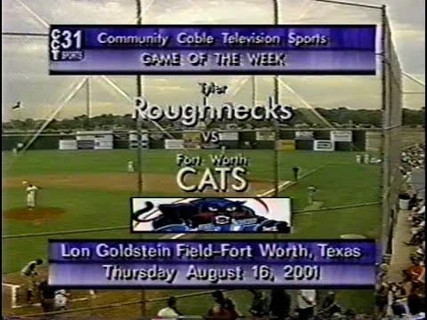

TYLER
ROUGHNECKS
Old School Tyler · Mike Carter Field · All-American Association · 2001
The Tyler Roughnecks lasted only one summer, but they packed an unusual amount of baseball into it. They posted a winning record, reached the playoffs, honored one of Tyler's baseball legends and brought professional baseball back to Mike Carter Field four years after the WildCatters disappeared.
Their story also came with almost absurdly perfect bookends. The first Roughnecks batter to step to the plate in Tyler hit the first pitch he saw over the center-field wall. The final game in franchise history ended in the bottom of the 12th inning, hundreds of miles away in Albany, Georgia.
Twenty-five years later, the Roughnecks remain
Tyler's most recent professional baseball team.
2001
One summer in the All-American Association.
39–32
In most records. One published standings table lists 40–32.
3rd
Lost a three-game playoff semifinal to Albany.
18,973
About 575 fans per home game.
- Home field
- Mike Carter Field
- Season
- 2001
- League
- All-American Association
- Manager
- Steve Maddock
- Record
- 39–32 in most records; 40–32 in one published standings table
- Finish
- Third place
- Playoffs
- Lost semifinal to Albany, 2–1
- Attendance
- 18,973
- What happened
- Relocated to Jackson, Mississippi for 2002
The Return
THREE MONTHS TO BUILD A BASEBALL TEAM
Tyler had been without professional baseball since the WildCatters finished their run in 1997. In 2001, a new independent league offered the city another shot.
The Roughnecks became one of six founding clubs in the All-American Association, joining teams in Fort Worth, Baton Rouge, Montgomery, Albany and Winchester, Tennessee. It was professional baseball, but there was no Major League parent club paying the bills or supplying the players. The Roughnecks had to operate on their own.
And they had to do it quickly.
Contemporary reporting described an organization that had essentially been assembled in about three months. General manager Charlie Chitwood doubled as broadcast director and media-relations director. Assistant GM Bill Rossell handled stadium operations and whatever else needed doing. The core front office numbered only about five people.
The name itself came from a public write-in contest. More than one Tyler resident suggested "Roughnecks," a name that happened to fit East Texas remarkably well. Black-and-red "T.R." hats and shirts appeared in the stands, and the team even had a fuzzy orange mascot whose name seems to have been lost to history.

A bearded roughneck in a red hard hat, a bat dripping with what looks like crude oil, and an East Texas rose tattoo.
This wasn't a polished minor-league machine that had been planning its debut for years.
It was a baseball startup.
Opening Night
FIRST PITCH. HOME RUN.
If somebody had written Tyler's first Roughnecks home game as a movie scene, an editor probably would have told them to tone it down.
The club opened its season on June 1 at Baton Rouge and spent the first six games on the road, returning to Tyler with a 3–3 record. Then outfielder Jose Colon walked to the plate as the first Roughnecks hitter ever to bat at Mike Carter Field.
The first pitch came in. Colon swung. The ball sailed over the 12-foot center-field wall.
Tyler's first home batter had hit Tyler's first home pitch for a home run.
The Roughnecks went on to beat the Baton Rouge Blue Marlins 12–7 before roughly 1,000 fans. KLTV had a television crew at the park, KZEY-AM 690 carried the action on radio, and the night finished with fireworks.
For one night, at least, professional baseball was very much back in Tyler.
THE FIRST ROUGHNECKS BATTER IN TYLER SAW ONE PITCH.
HE HIT IT OUT.
Independent Baseball
$4 TICKETS. $1.50 HOT DOGS. 13-HOUR BUS RIDES.
The real charm of the Roughnecks wasn't that they resembled Major League Baseball. It was that they didn't.
A general-admission ticket cost $4. The best seats in the stadium were $9. A hot dog was $1.50, with hamburgers, barbecue sandwiches, nachos, popcorn and the rest of the small-ballpark menu nearby.
Behind the scenes, things were considerably less glamorous.
On the morning of the home opener, the players arrived after a 13-hour bus ride from Albany. Many were trying to find apartments they had barely seen, only to discover that the units were essentially empty. Members of the front office had been putting in roughly 15-hour days trying to get the franchise functioning.
Hours before the opener, assistant GM Bill Rossell was sweeping the concourse and hanging signs. About ten minutes before first pitch, he was trying to locate the team's missing game caps. They were eventually found outside the main concession stand, a few inches from the men's bathroom.
That was Roughnecks baseball.

"Play Ball!" The team's only souvenir program.
The players weren't getting rich either. Contemporary reporting put typical salaries around $700 to $1,000 per month, without expenses. For many, independent baseball was another chance after an injury, release or stalled minor-league career: a place to keep playing long enough for an affiliated organization to notice.
One Tyler resident, Susan Williams, initially wanted only to hang a welcome banner at her apartment complex. Before long, she had somehow become the organizer of a Roughnecks booster club whose membership, at first, consisted largely of Susan Williams. She helped players with supplies and even crammed several of them into her car when they needed a ride to the ballpark.
It was professional baseball. Barely.
And that's what made it fun.
On The Field
THE ROUGHNECKS COULD ACTUALLY PLAY

The team, the coaches and the fuzzy orange mascot.
For all the chaos around them, the Roughnecks weren't a bad baseball team.
Tyler hit 46 home runs and allowed 367 runs. Whether the final record was 39–32 or 40–32, the Roughnecks finished above .500 and reached the postseason.
Six home runs in only 28 games.
18 saves and 50 strikeouts in 30⅓ innings.
Tyler's lone All-Star in surviving records: nine homers, 20 doubles, five triples.
Ramon Ruiz led the club with 11 home runs. Closer Rich Turrentine had previously reached Triple-A in the New York Mets organization and had been in Major League spring training before injuries disrupted his path.
Pitcher Jeff Ware provided the team's most direct Major League connection. Ware had appeared in 18 games for the Toronto Blue Jays during the 1995 and 1996 seasons before eventually landing in Tyler.
And then there was manager Steve Maddock, who apparently decided that managing wasn't enough. Maddock made one start himself. He pitched nine innings, allowed four hits and two earned runs, walked nobody and finished with a 2.00 ERA.
Because of course the manager of a five-person-front-office independent baseball team occasionally had to pitch, too.

A Roughnecks hitter in the gray road uniform.
A Strange Baseball Footnote
WAS THE RECORD 39–32 OR 40–32?
Historical sources disagree about Tyler's final record, and rather than pretend they don't, the discrepancy is worth explaining.
Most records, including Baseball-Reference and the team's individual pitching totals, put the Roughnecks at 39–32: 71 starts, 39 wins and 32 losses. But at least one published standings table lists Tyler at 40–32.
Nobody has yet turned up the missing game that would explain the difference.
For a team that existed for only one season, even the final record managed to leave behind a mystery.
August 2, 2001 · Red Murff Night
TYLER BASEBALL MEETS ITS PAST
The Roughnecks were new, but Mike Carter Field wasn't. The ballpark had opened in 1941 as Trojan Park and had hosted generations of Tyler baseball before the Roughnecks arrived. On August 2, 2001, the new club deliberately connected itself to that history with Red Murff Night.
Red Murff had pitched for the 1952 Tyler East Texans before eventually reaching the Major Leagues with the Milwaukee Braves. He later became a celebrated scout and is especially remembered as the scout who discovered and signed Nolan Ryan for the New York Mets.
That night in Tyler, the Roughnecks retired Murff's No. 21.
For a franchise with almost no past of its own, it was a fitting way to recognize the baseball history that had come before it.

The former Tyler East Texans pitcher on his Topps card with the Braves.

The Roughnecks retire No. 21 at Mike Carter Field.
August 2001 · The Playoffs
ONE RUN IN THE 12TH

Roughnecks at the Fort Worth Cats on the final day of the regular season, with Jeff Ware starting for Tyler.
From game video posted by TexasWildheartsFan on YouTube
Tyler finished third and qualified for the All-American Association playoffs, drawing the Albany Alligators in a best-of-three semifinal.
The series went to a deciding Game 3.
Then neither team wanted to leave.
The game was tied 3–3 entering the bottom of the 12th inning. With Rich Turrentine pitching to catcher Keronn Walker, a ball got away and Albany's winning run crossed the plate.
4–3
Albany Alligators over Tyler Roughnecks · 12 innings · August 20, 2001
The Alligators won the series two games to one. More significantly, although almost nobody in the ballpark could have known it yet, the game on August 20, 2001 became the final game the Tyler Roughnecks would ever play.
IT BEGAN WITH A FIRST-PITCH HOME RUN.
IT ENDED WITH A PASSED BALL IN THE 12TH.
The Business Side
A WINNING TEAM IN A FAILING LEAGUE
Winning wasn't enough.
The Roughnecks drew 18,973 fans during the season, or roughly 575 per home game. Just a few years earlier, the WildCatters had averaged more than 1,000 fans per game in every one of their four seasons.
But Tyler's problems were bigger than Tyler. The entire All-American Association was unstable. Four of its six clubs reportedly averaged fewer than 1,000 fans, and after only one season the league began breaking apart.
What makes the Roughnecks' disappearance especially striking is how quickly expectations changed. During the home opener, team personnel told the Dallas Observer that the ownership group had already committed to another season and was discussing league expansion.
By winter, everything had changed.
January 2002 · The Move
TYLER BECOMES JACKSON
After the season, Tyler and Fort Worth announced plans to leave the All-American Association and join the Central Baseball League.
Tyler never made it there.
In January 2002, the ownership group announced that the franchise would relocate to Jackson, Mississippi, where it became the Jackson Senators. The Roughnecks name disappeared after a single season.
The franchise itself had a little more life left in it. Jackson reached the Central League championship series in 2002. One year later, the Senators went 59–37 and swept Amarillo to win the 2003 Central League championship.
So one of the stranger footnotes in Tyler sports history is this: two seasons after leaving East Texas, the former Roughnecks franchise became a champion.
Legacy
TYLER'S LAST PROFESSIONAL BASEBALL TEAM
The Roughnecks existed for only one season, which makes them easy to overlook. They shouldn't be.
They were a winning professional baseball team assembled almost overnight, playing in a startup league with a tiny staff and players trying to keep their careers alive.
- Their first home batter homered on his first pitch.
- Their manager took the mound himself.
- They retired the number of the man who signed Nolan Ryan.
- They reached the playoffs.
Then they disappeared.
Mike Carter Field is still there, and baseball is still played there. Tyler Junior College, local high schools and, since 2026, the collegiate summer Tyler Knockouts have kept the park alive. But as of 2026, no professional baseball franchise has replaced the Roughnecks.
For one summer in 2001, Tyler had professional baseball again. It hasn't had it since.
ONE SUMMER. ONE PLAYOFF RUN.
TYLER'S LAST PROFESSIONAL BASEBALL TEAM.
Were you there in 2001?
If you went to a Roughnecks game, worked for the team, played for the team or still have a program, ticket stub, photo or cap from that summer, we'd love to hear from you. One season doesn't leave much behind, and every piece helps.
Sources & Research Notes
WHERE THE HISTORY COMES FROM
This entry leans most heavily on the Dallas Observer's June 2001 feature, written while the Roughnecks were actually playing, along with baseball statistics databases and surviving team material.
- Tyler Roughnecks team materialThe team logo and the 2001 "Play Ball!" souvenir program.
- Dallas Observer — "Fantasy League," John Gonzalez (June 21, 2001)Written during the season: the front office, the name contest, opening night, ticket prices, salaries, the booster club and the plans for 2002.
- Fun While It Lasted — Tyler RoughnecksThe season's first game, Jeff Ware, the 12-inning playoff finale and the move to Jackson.
- Baseball-Reference Bullpen — Tyler RoughnecksRecord, Michael Kirkpatrick as the team's lone All-Star and Rich Turrentine's season.
- Baseball-Reference Bullpen — All-American AssociationThe league's six teams.
- StatsCrew — 2001 Tyler Roughnecks statisticsPlayer and pitching totals, including Steve Maddock's nine-inning start.
- StatsCrew — 2001 All-American Association standings and attendance18,973 fans, an average of 575 over 33 home dates.
- StatsCrew — Tyler WildcattersWildCatters attendance for comparison.
- StatsCrew — 2003 Jackson SenatorsThe 59–37 season and the championship sweep of Amarillo.
- Baseball-Reference Bullpen — Red MurffRed Murff Night on August 2, 2001 and the retirement of No. 21.
- UT Tyler — Red MurffThe 1952 Tyler East Texans, the Milwaukee Braves and Nolan Ryan.
- Wikipedia — Jeff WareHis Toronto Blue Jays career, 1995–1996.
- KLTV — Tyler adds summer collegiate baseball (April 20, 2026)The Tyler Knockouts are a collegiate summer team, not a professional one.
- YouTube — Tyler Roughnecks @ Fort Worth Cats (August 16, 2001)Game video posted by TexasWildheartsFan.
FAQ
FREQUENTLY ASKED QUESTIONS
The Tyler Roughnecks played one season, 2001. Their first game was June 1 at Baton Rouge, and their last was a 12-inning playoff loss at Albany on August 20.
The Roughnecks played in the All-American Association, a six-team independent professional baseball league that operated in 2001. Despite the "AAA" initials, it had nothing to do with Triple-A affiliated baseball.
The Roughnecks played their home games at Mike Carter Field in Tyler, Texas. The ballpark opened in 1941 as Trojan Park and had hosted the Tyler Trojans, Tigers and WildCatters before the Roughnecks arrived.
Most records, including Baseball-Reference and the team's pitching totals, list the Roughnecks at 39–32. At least one published standings table lists 40–32. Tyler finished third and reached the league playoffs.
Pitcher Jeff Ware had already pitched in 18 games for the Toronto Blue Jays in 1995 and 1996 before joining Tyler. Closer Rich Turrentine had reached Triple-A in the New York Mets organization.
After the 2001 season, the franchise moved to Jackson, Mississippi, in January 2002 and became the Jackson Senators. Jackson won the 2003 Central Baseball League championship.
Yes. As of 2026, the 2001 Tyler Roughnecks are the most recent professional baseball team in Tyler. The Tyler Knockouts, who began playing at Mike Carter Field in 2026, are a collegiate summer team rather than a professional one.
The Roughnecks' story picks up where the Tyler WildCatters left off. More forgotten teams and pieces of Tyler history live in Old School Tyler.